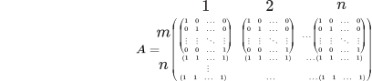

Learning Optimal Transport from Samples
The study of optimal transport aims to create a mapping that minimizes the total cost of moving mass from $\alpha$ to $\beta$, as originally formulated by Monge (1781). Applications like shape matching, data assimilation, and active brain transportation are among the exciting research areas advancing these methods to find suitable mappings between $\alpha$ and $\beta$ for specific purposes.
This post refers to locations in the source and target as $\alpha$ and $\beta$, respectively, and uses $a$ and $b$ for distributions.
The motivation for this post is drawn from a recent paper by Makkuva et al., which introduces a novel approach to learning optimal transport from samples (ICML 2020).
It is noteworthy that optimal transport was initially proposed for tasks such as resource allocation among warehouses, traffic management, and distributing soldiers to different camps.
We’ll first discuss the Monge problem itself and then describe the sampling approach of Makkuva et al. to learn mappings.
Monge Problem
Let’s define resources $x_1,..,x_n$ in $\alpha$ and resources $y_1,..,y_m$ in $\beta$. We assign weight vectors $a$ and $b$ to these resources and define matrix $C$ as a measure of the pairwise distances between points $x_i \in \alpha$ and relative points derived from $T (x_i)$ in $\beta$. The Monge problem seeks to solve the following optimization problem:
$$ \min_{ T} \{ \sum_i C(x_i, T (x_i)) : T_{\sharp} \alpha = \beta \} $$
where the push-forward operator $\sharp$ represents the direction of the transportation plan.
Kantrovich Relaxation
Kantrovich proposed a relaxation of the Monge problem, allowing a source bin to be distributed to multiple locations in the target. Feasible solutions for this problem are defined by $U$ as follows:
$$ U(a,b) = \{T \in \mathrm{R}^{n\times m}_+ : T \mathrm{1}_m = a , T^T \mathrm{1}_n = b\}, $$
This ensures no particle or mass is lost during the transportation plan $T$ for vectors of all 1s and distributions $a$ and $b$. An optimal solution is obtained by solving the following problem for a given ground metric matrix $C \in \mathbb{R}^{n\times m}$: $$ L_c(a,b) = \min_{T \in U(a,b)} \langle C, T \rangle = \sum_{i,j} C_{i,j} T_{i,j}. $$
Linear Programming
With some linear algebra, we can formulate the Kantrovich relaxation as a linear programming problem:
$$ L_c(\alpha, \beta) = \min_{T} C^T T \text{ s.t., } A \underline{T} = \begin{bmatrix} \alpha \\ \beta \end{bmatrix} $$
where:

Algorithmic solutions for this linear program are well-established. In high-dimensional spaces, however, the proposed algorithms become computationally prohibitive. Some research has suggested quantizing space to handle the curse of dimensionality. For instance, a semi-discrete approach was proposed at ICML 2019 by the UIUC group.
- If the source randomness of the network is a distribution, optimal transport can be achieved via deterministic evaluation.
- For optimal transport mapping between a generator network and target distribution, the Wasserstein distance can be minimized through regression between generated data and mapped target points ($\Phi_1, \Phi_2,..,\Phi_N$): $$ L(x) = \frac{1}{B} \sum_{j=1}^B \min_i (c(x_j,y_i)-\Phi_i) + \frac{1}{N} \sum_{i=1}^N \Phi_i $$
This approach requires evaluating each point, and heuristic methods sample issues and use those as regularizers, potentially leading to biases. Makkuva et al. proposed learning optimal transport from samples by exploring convex function sets.
Their method utilizes a dual form of Kantrovich’s relaxation:
$$ W(a,b) = \sup_{(f,g) \in \phi_c} \mathrm{E}_a[f(x)] + \mathrm{E}_b[g(y)] $$
where $\phi_c$ represents a set of constrained functions with $f(x) + g(y) \leq \frac{1}{2} ||x-y||^2$.
Input-Convex Neural Networks
Input-convex neural networks (ICNNs) are a class of neural networks where outputs are convex with respect to inputs, defined recursively by:
$$ f(x;\theta) = h_L \quad \text{where} \quad h_{l+1} = \sigma_l (W_l h_l + b_l + A_l x), \quad l = 0,1,..,L-1 $$
Based on this architecture, Makkuva et al. solve the Kantrovich dual problem using ICNNs, minimizing the need for new regularization.
$$ W(a,b) = C_{a,b} - \inf_{(f,g) \in \phi_c} \mathrm{E}_a[f(x)] + \mathrm{E}_b[g(y)] $$
where $C_{a,b} = \frac{1}{2} \mathrm{E}[x^2] + \frac{1}{2} \mathrm{E}[y^2]$, based on $f(x) + g(y) \leq \frac{1}{2} ||x-y||^2$.
Ultimately, we can define the optimal transport map $\triangledown f^*$ by Brenier’s theorem:
$$ \mathrm{E}_b ||\triangledown f^*(y)- y||^2 = \inf_{T: T_{\sharp} a = b} \mathrm{E}_b ||T(y) - y||^2 $$
Brenier’s Theorem
Brenier’s theorem states that if $b$ admits a density with respect to the Lebesgue measure on $\mathrm{R}^d$, then there exists a unique optimal coupling $\pi$ for the Monge problem:
$$ d \pi (x,y) = df(y) \delta_{x = \triangledown f^*(y)}. $$